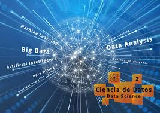
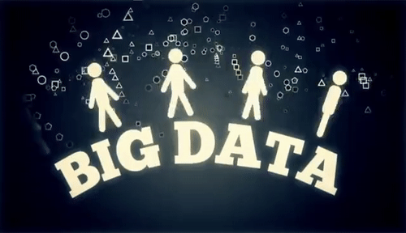

¿A qué se refiere Big Data?
Big data se refiere a la increíble cantidad de información estructurada y no estructurada que generan los seres humanos y las máquinas: petabytes cada día, según PwC. Son las publicaciones sociales que extraemos para conocer el sentimiento de los clientes, los datos de los sensores que muestran el estado de la maquinaria, las transacciones financieras que mueven dinero a hipervelocidad.
Big data implica la capacidad de extraer información de esta amplia colección de datos para ayudar a una organización a ser más eficiente e innovar más rápido,
¿Cómo funciona Big Data?
Big data funciona proporcionando información que arroja luz sobre nuevas oportunidades y modelos de negocio. Una vez que se han ingerido los datos, la introducción implica tres acciones clave:
1. Integrar
El big data concentra datos de numerosas fuentes y aplicaciones distintas. Los mecanismos de integración de datos convencionales, como “extraer, transformar y cargar” (extract, transform, load, ETL), generalmente no están a la altura en dicha tarea. Analizar conjuntos de big data de uno o más terabytes, o incluso petabytes, de tamaño requiere de nuevas estrategias y tecnologías.
2. Gestionar
El big data requiere almacenamiento. Tu solución de almacenamiento puede estar en la nube, en las instalaciones o en ambas. Puede almacenar sus datos de cualquier forma que desee e incorporar los requisitos de procesamiento de su preferencia y los motores de procesamiento necesarios a dichos conjuntos de datos on-demand. Muchas personas eligen su solución de almacenamiento en función de dónde residan sus datos en cada momento.
3. Analizar
La inversión en big data se rentabiliza en cuanto se analizan y utilizan los datos. Un análisis visual de sus diversos conjuntos de datos brinda una nueva claridad. Continúa explorando los datos para realizar nuevos descubrimientos. Comparte tus hallazgos con otras personas.
Características del Big Data
Estas con algunas de las características principales del Big Data, conocidas como las 5V del big data, aunque conforme pasa el tiempo se van ampliando cada una de ellas